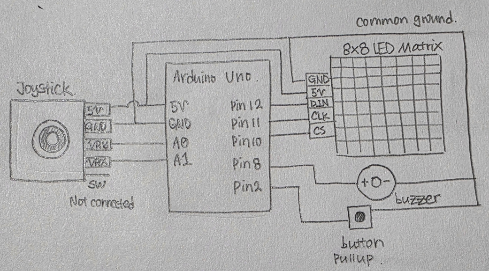
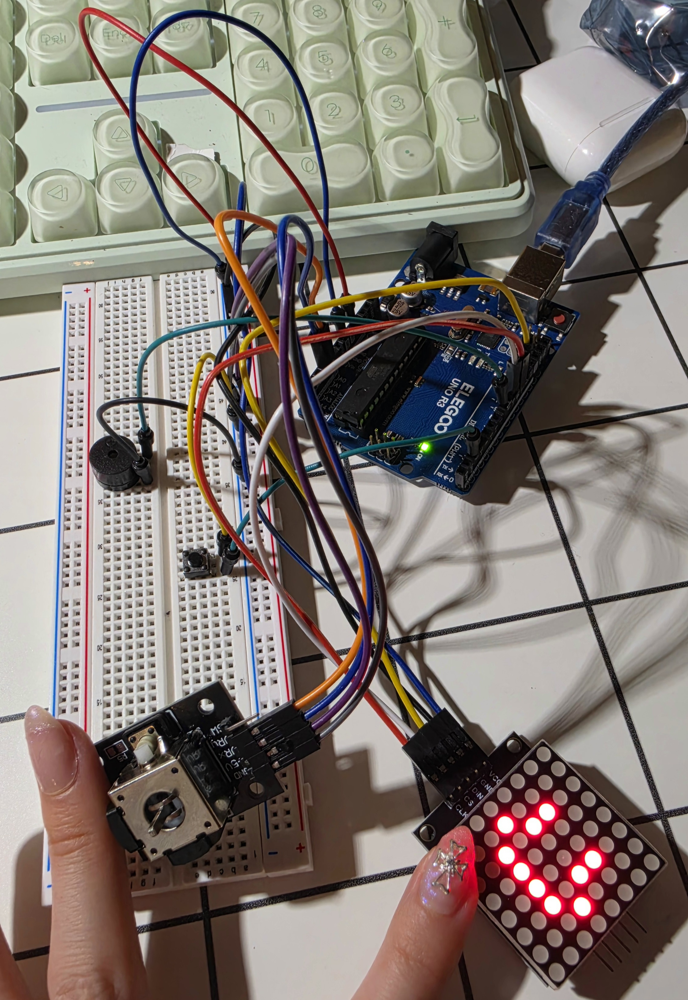
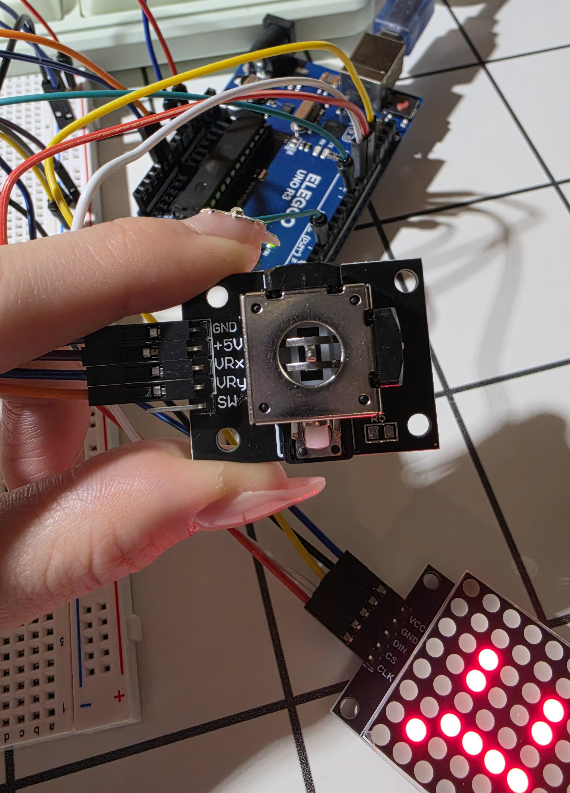
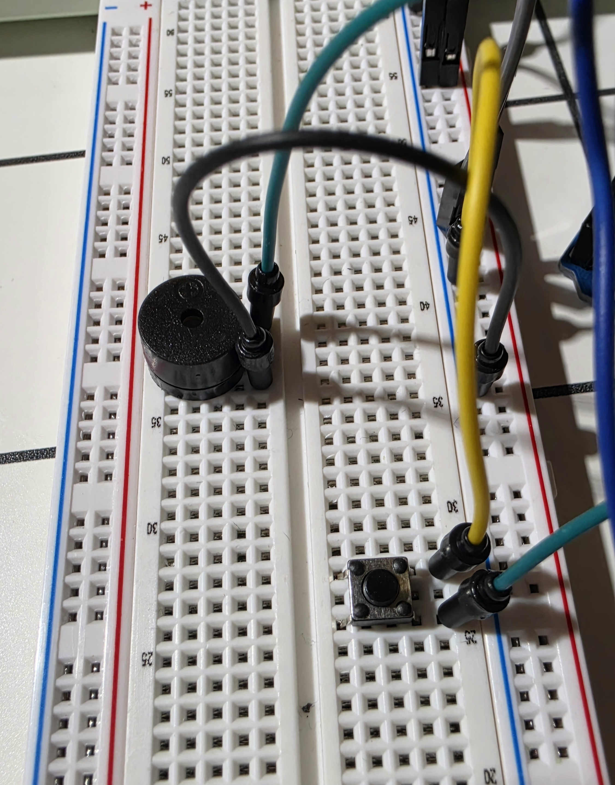
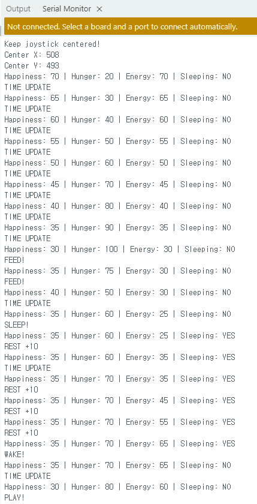
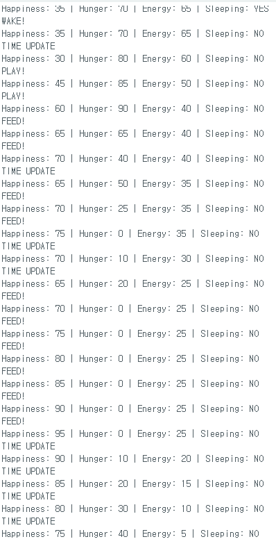
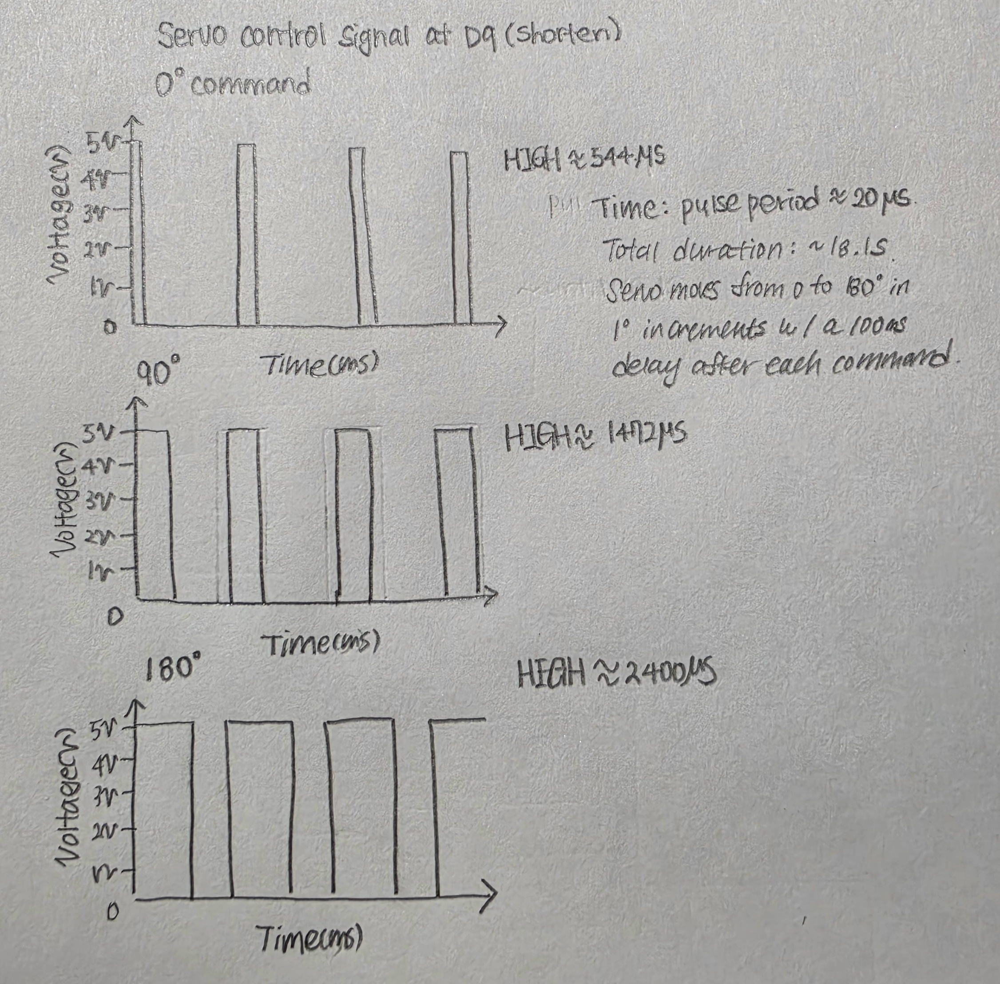

HCDE 439 - Physical Computing | Bomyung Lee | 11.03.26
An Interactive Virtual Pet with an LED Matrix, Joystick, Button, and Buzzer
For this assignment, I created Pocket Smilely, a small interactive virtual pet inspired by Tamagotchi.
In a previous project, I experimented with a small OLED display to create a simple interactive character. When I learned that I could create something similar using an 8×8 LED matrix, I wanted to explore how I could turn it into a more playful experience. Inspired by Tamagotchi, I decided to design a virtual pet that users could interact with and take care of, almost like a small game. Although the 8×8 LED matrix has limited space for detailed expressions, I wanted to see how much personality I could give the character using only a few pixels. I designed four facial expressions: happy, neutral, sad, and sleeping. I also used a joystick and a push button to let users play with the pet, feed it, and put it to sleep.
One thing I was especially excited about was adding sound. In my previous project, I had not been able to include audio feedback, but this time I used a passive buzzer to create different sounds for the pet's interactions. Even though Pocket Smilely does not have as many features as an actual Tamagotchi game, the combination of facial expressions, physical controls, and sound made the experience feel more like playing a game rather than simply interacting with an electronic circuit.
Through this project, I wanted to explore how simple electronic components could work together to create an interactive character that feels responsive and has its own personality.
| Action | Input | Response | State Change |
|---|---|---|---|
| Feed | Push button on D2 | Happy reaction and 1047 Hz tone | Hunger −25, happiness +5 |
| Play | Joystick horizontal movement (A0) | Happy reaction and 880 Hz tone | Happiness +15, energy −10, hunger +5 |
| Sleep & Wake | Joystick downward movement (A1) | Sleep or wake face and corresponding tone | Toggle sleeping, energy recovers while asleep |
| Time passing | Internal timer | Face reflects current condition | Hunger rises, awake happiness and energy decline |
| Expression | Condition in firmware |
|---|---|
| Sleeping | Sleeping is true, highest display priority |
| Happy | Positive reaction for 1 second, or happiness ≥ 70 and hunger ≤ 40 |
| Sad | Hunger ≥ 70, happiness ≤ 30, or energy ≤ 10 |
| Neutral | Other awake conditions |
The temporary positive reaction takes priority over the sad and ordinary happy states while the pet is awake.

| Component | Connection | Purpose |
|---|---|---|
| MAX7219 LED matrix DIN | D12 | Serial data |
| MAX7219 CLK | D11 | Clock |
| MAX7219 CS / LOAD | D10 | Chip select |
| Joystick VRx | A0 | Horizontal analog input |
| Joystick VRy | A1 | Vertical analog input |
| Feed button | D2 and GND | INPUT_PULLUP, active LOW |
| Passive buzzer signal | D8 | Audio output |
| Module power and ground | 5V and GND as appropriate | Shared power reference |
The Arduino's 10-bit analog-to-digital converter returns readings from 0 to 1023. Although the theoretical midpoint is near 512, the joystick's actual resting position can differ. At startup, my program collects 100 readings from each axis and calculates their average.
Calibrated center = sum of 100 readings / 100
Sampling delay = 100 × 20 ms = 2000 ms (approximately 2 seconds)
| Axis | Theoretical midpoint | Measured center | Difference | Approximate voltage at 5V reference |
|---|---|---|---|---|
| X (A0) | 512 | 508 | −4 | 508 / 1023 × 5 ≈ 2.483 V |
| Y (A1) | 512 | 493 | −19 | 493 / 1023 × 5 ≈ 2.410 V |
These voltages are calculated estimates, not measurements taken with a multimeter. The measured centers are not hard-coded; the firmware recalibrates at each startup.
The program uses a deadzone of 200 ADC counts to distinguish intentional movement from small changes near the calibrated center. For example, an X reading of 750 gives an offset of 750 − 508 = 242, which exceeds the threshold and triggers play. Horizontal movement is detected when |X offset| > 200. Sleep/wake is triggered when the Y offset is less than −200. The direction depends on how the joystick is oriented and wired.
| Value | Purpose and justification |
|---|---|
| 25 ms | Bounce2 debounce interval to reduce multiple detections from one physical button press |
| 1000 ms | Temporary happy expression, long enough to notice after an interaction |
| 10,000 ms | Automatic needs update interval, short enough to observe during testing |
| 3000 ms | Energy recovery interval while sleeping |
| 0–100 | Bounded scale for happiness, hunger, and energy |
| 1047 / 880 / 392 / 784 Hz | Distinct feeding, playing, sleeping, and waking audio cues |
| 150–180 ms | Short sound durations for responsive feedback |
| LED intensity 4 | MAX7219 software brightness setting; not a measured current or resistance |
These are programmed interaction values rather than resistor calculations. The MAX7219 module controls its LED array through its driver circuitry. Any additional physical resistor values must be documented according to the actual circuit, not assumed.
I assembled the components around the Arduino and tested the LED matrix, joystick, button, and buzzer before combining their behaviors in one program.



I wrote the firmware in the Arduino IDE. LedControl communicates with the MAX7219 display, while Bounce2 debounces the feeding button. The program also uses analogRead() for joystick input, tone() for sound, and millis() for non-blocking timing.
setup() initializes the matrix and button and calibrates the joystick. calibrateJoystick() averages 100 readings per axis. showFace() draws the pixel expression. feedPet(), playPet(), and toggleSleep() process interactions. updateNeeds() changes conditions over time. updateDisplay() selects a face. loop() continuously reads inputs and updates the pet.
The following is the final commented firmware from the tested project. Each substantive statement has an explanatory comment above it.
// Include the library for controlling the MAX7219 LED matrix.
#include <LedControl.h>
// Include the library for debouncing button inputs.
#include <Bounce2.h>
// Assign analog pin A0 to the joystick X-axis.
const int JOY_X = A0;
// Assign analog pin A1 to the joystick Y-axis.
const int JOY_Y = A1;
// Assign digital pin 12 to the LED matrix data input.
const int DIN_PIN = 12;
// Assign digital pin 11 to the LED matrix clock.
const int CLK_PIN = 11;
// Assign digital pin 10 to the LED matrix chip select.
const int CS_PIN = 10;
// Assign digital pin 2 to the feeding button.
const int BUTTON_PIN = 2;
// Assign digital pin 8 to the passive buzzer.
const int BUZZER_PIN = 8;
// Set the number of readings used for calibration.
const int CALIBRATION_SAMPLES = 100;
// Set the joystick movement threshold to 200 ADC counts.
const int DEADZONE = 200;
// Display positive reactions for 1000 milliseconds.
const unsigned long REACTION_TIME = 1000;
// Update natural needs every 10000 milliseconds.
const unsigned long STATUS_INTERVAL = 10000;
// Restore energy every 3000 milliseconds while sleeping.
const unsigned long REST_INTERVAL = 3000;
// Create a controller for one MAX7219 LED matrix.
LedControl matrix = LedControl(DIN_PIN, CLK_PIN, CS_PIN, 1);
// Create a debounced button object.
Bounce2::Button feedButton = Bounce2::Button();
// Store the joystick's calibrated horizontal center.
int centerX = 512;
// Store the joystick's calibrated vertical center.
int centerY = 512;
// Set the pet's initial happiness to 70.
int happiness = 70;
// Set the pet's initial hunger to 20.
int hunger = 20;
// Set the pet's initial energy to 70.
int energy = 70;
// Track whether the pet is sleeping.
bool sleeping = false;
// Track whether horizontal joystick movement is held.
bool playHeld = false;
// Track whether downward joystick movement is held.
bool sleepHeld = false;
// Store the time of the last natural status update.
unsigned long lastStatusTime = 0;
// Store the time of the last energy recovery update.
unsigned long lastRestTime = 0;
// Store the time of the last positive interaction.
unsigned long lastReactionTime = 0;
// Track whether a temporary happy reaction is active.
bool reacting = false;
// Define the happy facial expression.
const byte happyFace[8] = {
// Leave the first row empty.
B00000000,
// Leave the second row empty.
B00000000,
// Draw the upper part of the eyes.
B00100100,
// Draw the lower part of the eyes.
B00100100,
// Draw the raised corners of the smile.
B01000010,
// Draw the curved smile.
B00111100,
// Leave the seventh row empty.
B00000000,
// Leave the eighth row empty.
B00000000
};
// Define the sad facial expression.
const byte sadFace[8] = {
// Leave the first row empty.
B00000000,
// Leave the second row empty.
B00000000,
// Draw the upper part of the eyes.
B00100100,
// Draw the lower part of the eyes.
B00100100,
// Leave space between the eyes and mouth.
B00000000,
// Draw the upper part of the sad mouth.
B00111100,
// Draw the downward corners of the mouth.
B01000010,
// Leave the final row empty.
B00000000
};
// Define the neutral facial expression.
const byte neutralFace[8] = {
// Leave the first row empty.
B00000000,
// Leave the second row empty.
B00000000,
// Draw the upper part of the eyes.
B00100100,
// Draw the lower part of the eyes.
B00100100,
// Leave space above the mouth.
B00000000,
// Draw a straight neutral mouth.
B00111100,
// Leave the seventh row empty.
B00000000,
// Leave the eighth row empty.
B00000000
};
// Define the sleeping facial expression.
const byte sleepFace[8] = {
// Leave the first row empty.
B00000000,
// Leave the second row empty.
B00000000,
// Leave the third row empty.
B00000000,
// Draw the closed eyes.
B01100110,
// Leave space below the eyes.
B00000000,
// Draw the sleeping mouth.
B00111100,
// Leave the seventh row empty.
B00000000,
// Leave the eighth row empty.
B00000000
};
// Display a facial expression on the LED matrix.
void showFace(const byte face[8]) {
// Iterate through all eight rows.
for (int row = 0; row < 8; row++) {
// Send the selected row pattern to the matrix.
matrix.setRow(0, row, face[row]);
}
}
// Calibrate the joystick's resting position.
void calibrateJoystick() {
// Store the sum of horizontal readings.
long sumX = 0;
// Store the sum of vertical readings.
long sumY = 0;
// Ask the user to keep the joystick centered.
Serial.println("Keep joystick centered!");
// Collect 100 readings from each axis.
for (int i = 0; i < CALIBRATION_SAMPLES; i++) {
// Add the current horizontal reading.
sumX += analogRead(JOY_X);
// Add the current vertical reading.
sumY += analogRead(JOY_Y);
// Wait 20 milliseconds before the next sample.
delay(20);
}
// Calculate the average horizontal center.
centerX = sumX / CALIBRATION_SAMPLES;
// Calculate the average vertical center.
centerY = sumY / CALIBRATION_SAMPLES;
// Print the horizontal calibration label.
Serial.print("Center X: ");
// Print the horizontal calibration result.
Serial.println(centerX);
// Print the vertical calibration label.
Serial.print("Center Y: ");
// Print the vertical calibration result.
Serial.println(centerY);
}
// Print the pet's current internal conditions.
void printStatus() {
// Print the happiness label.
Serial.print("Happiness: ");
// Print the happiness value.
Serial.print(happiness);
// Print the hunger label.
Serial.print(" | Hunger: ");
// Print the hunger value.
Serial.print(hunger);
// Print the energy label.
Serial.print(" | Energy: ");
// Print the energy value.
Serial.print(energy);
// Print the sleeping status label.
Serial.print(" | Sleeping: ");
// Print whether the pet is sleeping.
Serial.println(sleeping ? "YES" : "NO");
}
// Start a temporary positive facial reaction.
void startReaction() {
// Enable the temporary reaction.
reacting = true;
// Record the current time.
lastReactionTime = millis();
}
// Feed the virtual pet.
void feedPet() {
// Prevent feeding while the pet is sleeping.
if (sleeping) return;
// Reduce hunger by 25 without going below zero.
hunger = max(0, hunger - 25);
// Increase happiness by 5 without exceeding 100.
happiness = min(100, happiness + 5);
// Start the temporary happy expression.
startReaction();
// Play a 1047 Hz feeding tone for 180 milliseconds.
tone(BUZZER_PIN, 1047, 180);
// Print the feeding event.
Serial.println("FEED!");
// Print the updated internal conditions.
printStatus();
}
// Play with the virtual pet.
void playPet() {
// Prevent playing while sleeping or too tired.
if (sleeping || energy < 10) return;
// Increase happiness by 15.
happiness = min(100, happiness + 15);
// Reduce energy by 10.
energy = max(0, energy - 10);
// Increase hunger by 5.
hunger = min(100, hunger + 5);
// Start the temporary happy expression.
startReaction();
// Play an 880 Hz tone for 150 milliseconds.
tone(BUZZER_PIN, 880, 150);
// Print the playing event.
Serial.println("PLAY!");
// Print the updated internal conditions.
printStatus();
}
// Switch between sleeping and waking.
void toggleSleep() {
// Reverse the current sleeping state.
sleeping = !sleeping;
// Cancel any temporary happy expression.
reacting = false;
// Reset the energy recovery timer.
lastRestTime = millis();
// Check whether the pet has entered sleep mode.
if (sleeping) {
// Play a 392 Hz sleeping tone for 180 milliseconds.
tone(BUZZER_PIN, 392, 180);
// Print the sleeping event.
Serial.println("SLEEP!");
}
// Handle the waking state.
else {
// Play a 784 Hz waking tone for 180 milliseconds.
tone(BUZZER_PIN, 784, 180);
// Print the waking event.
Serial.println("WAKE!");
}
// Print the updated internal conditions.
printStatus();
}
// Update the pet's needs based on elapsed time.
void updateNeeds(unsigned long now) {
// Check whether the natural status interval has passed.
if (now - lastStatusTime >= STATUS_INTERVAL) {
// Record the latest natural status update.
lastStatusTime = now;
// Increase hunger by 10.
hunger = min(100, hunger + 10);
// Check whether the pet is awake.
if (!sleeping) {
// Reduce happiness by 5.
happiness = max(0, happiness - 5);
// Reduce energy by 5.
energy = max(0, energy - 5);
}
// Print the automatic status update event.
Serial.println("TIME UPDATE");
// Print the updated internal conditions.
printStatus();
}
// Check whether sleeping energy recovery is due.
if (sleeping && now - lastRestTime >= REST_INTERVAL) {
// Record the latest recovery time.
lastRestTime = now;
// Restore 10 energy points.
energy = min(100, energy + 10);
// Print the recovery event.
Serial.println("REST +10");
// Print the updated internal conditions.
printStatus();
}
}
// Select the facial expression based on the pet's state.
void updateDisplay(unsigned long now) {
// Check whether the pet is sleeping.
if (sleeping) {
// Show the sleeping expression.
showFace(sleepFace);
}
// Check whether a positive reaction is still active.
else if (reacting && now - lastReactionTime < REACTION_TIME) {
// Show the happy expression temporarily.
showFace(happyFace);
}
// Check whether the pet needs attention.
else if (hunger >= 70 || happiness <= 30 || energy <= 10) {
// Show the sad expression.
showFace(sadFace);
}
// Check whether the pet is happy and not very hungry.
else if (happiness >= 70 && hunger <= 40) {
// Show the happy expression.
showFace(happyFace);
}
// Handle all other awake conditions.
else {
// Show the neutral expression.
showFace(neutralFace);
}
}
// Initialize the hardware and the virtual pet.
void setup() {
// Start serial communication at 9600 baud.
Serial.begin(9600);
// Wake the MAX7219 LED matrix.
matrix.shutdown(0, false);
// Set the LED matrix intensity to level 4.
matrix.setIntensity(0, 4);
// Clear the LED matrix.
matrix.clearDisplay(0);
// Connect the button using the internal pull-up resistor.
feedButton.attach(BUTTON_PIN, INPUT_PULLUP);
// Set the button debounce interval to 25 milliseconds.
feedButton.interval(25);
// Define LOW as the pressed button state.
feedButton.setPressedState(LOW);
// Measure the joystick's resting position.
calibrateJoystick();
// Initialize the natural status update timer.
lastStatusTime = millis();
// Initialize the energy recovery timer.
lastRestTime = millis();
// Display the neutral expression during startup.
showFace(neutralFace);
// Print the initial virtual pet conditions.
printStatus();
}
// Continuously process inputs and update the pet.
void loop() {
// Read the current elapsed time.
unsigned long now = millis();
// Update the debounced feeding button state.
feedButton.update();
// Detect a new feeding button press.
if (feedButton.pressed()) {
// Feed the virtual pet.
feedPet();
}
// Read the horizontal joystick offset from its calibrated center.
int xOffset = analogRead(JOY_X) - centerX;
// Read the vertical joystick offset from its calibrated center.
int yOffset = analogRead(JOY_Y) - centerY;
// Check whether the joystick moved horizontally.
bool playingNow = abs(xOffset) > DEADZONE;
// Check whether the joystick moved downward.
bool sleepingNow = yOffset < -DEADZONE;
// Detect a new horizontal joystick movement.
if (playingNow && !playHeld) {
// Trigger one playing interaction.
playPet();
}
// Remember whether horizontal movement is being held.
playHeld = playingNow;
// Detect a new downward joystick movement.
if (sleepingNow && !sleepHeld) {
// Switch the pet between sleeping and waking.
toggleSleep();
}
// Remember whether downward movement is being held.
sleepHeld = sleepingNow;
// Update hunger, happiness, and energy over time.
updateNeeds(now);
// Refresh the facial expression.
updateDisplay(now);
}
During the development of Pocket Smilely, I tested each component separately before combining them into a complete system. Compared to my previous assignments, building the circuit was much easier because I did not need to connect separate resistors or deal with complicated wiring. However, I spent quite a bit of time understanding and calculating the values used in the code.
I started by testing the LED matrix, followed by the joystick, push button, and passive buzzer. One important step was calibrating the joystick, since its actual center values (X = 508, Y = 493) were slightly different from the theoretical value of 512. I also used the Bounce2 library for button debouncing and millis() to manage the pet's changing conditions over time.
Although I struggled a little with debugging, especially when combining the different interactions, the overall process felt much easier than my previous projects. After adjusting the facial expressions and testing the final firmware, I was happy to see everything working together as a small interactive game.
One limitation of Pocket Smilely was the 8×8 LED matrix. Since it only has 64 pixels, I found it difficult to create detailed facial expressions or animations. Although I was able to design four different expressions, I wished I could make the character more expressive and give it more personality. I also felt that the limited display made it challenging to communicate the pet's different conditions visually.
Another limitation was the amount of time I had to develop the project. I originally wanted to include more interactions and behaviors, but I had to focus on making the basic functions work properly. I especially enjoyed experimenting with the passive buzzer because adding sound made Pocket Smilely feel more like a real game. However, I was disappointed that I did not have enough time to create a wider variety of sound effects.
I also realized that adding more features would make the code longer and more complicated, requiring more testing and debugging. If I have the opportunity to continue developing Pocket Smilely, I would like to explore new interactions, additional facial expressions, and different sounds. I think there is still a lot I could do to make this small character feel more alive and interactive.

The feeding button decreases hunger and briefly shows a happy expression. Horizontal joystick movement plays with the pet, while downward movement toggles sleeping and waking. When asleep, the pet gradually recovers energy. Over time, its hunger and other needs change, affecting the displayed expression.


In the provided example, the servo position command increases from 0° to 180° in steps of 1°, with a 100 ms delay after each command. The control signal at D9 is a series of digital pulses, not a smoothly increasing analog voltage. The voltage switches between approximately 0 V and 5 V, while the HIGH pulse width changes with the requested angle.

With the Arduino Servo library's typical default pulse-width mapping, the endpoints are approximately 544 µs for 0° and 2400 µs for 180°. Intermediate positions have intermediate HIGH durations. The actual values depend on the library configuration. There are 181 commands, so the total programmed delay is 181 × 100 ms = 18,100 ms = 18.1 seconds, plus a small amount of processing time. This figure shows zoomed pulse windows, not every pulse across the entire sweep.
I would use a five-sample median filter to reduce the effect of occasional extreme incorrect readings. A single outlier has less influence on the middle value than on an average.
FUNCTION readFilteredSensor():
readings = empty list
REPEAT 5 TIMES:
add readSensor() to readings
sort readings from smallest to largest
RETURN readings[2]
For example, the readings 508, 510, 999, 509, and 507 become 507, 508, 509, 510, 999 after sorting. The median is 509. This works best when errors are occasional and relatively isolated; it cannot guarantee correct output when several samples are wrong.
I would use a moving average filter over the five most recent readings. This smooths random positive and negative fluctuations, although it can delay responses to real changes.
recentReadings = empty list
WINDOW_SIZE = 5
LOOP:
newReading = readSensor()
add newReading to recentReadings
IF length(recentReadings) > WINDOW_SIZE:
remove oldest reading
filteredValue = sum(recentReadings) / length(recentReadings)
use filteredValue to control the system
If the readings are 480, 530, 490, 520, and 500, their average is (480 + 530 + 490 + 520 + 500) / 5 = 504, close to an assumed true value of 500. Both filtering approaches in Questions 2 and 3 are proposed improvements and are not part of the current Pocket Smilely firmware.
I used ChatGPT throughout this project as a tool to brainstorm ideas, plan the interactions, and develop Pocket Smilely. We discussed how to turn a simple 8×8 LED matrix into a small virtual pet inspired by Tamagotchi and explored which features would be realistic to implement with the components and time available. ChatGPT also helped me understand how to use different Arduino libraries, organize the code, troubleshoot issues, and explain the calculations used in the project. However, I physically assembled the circuit, tested the components, customized the facial expressions, and verified that the final program worked as intended.
Overall, I found AI especially helpful for organizing my ideas and understanding unfamiliar technical concepts. Rather than simply following its suggestions, I made decisions based on what I wanted to create and what I could actually implement. The full ChatGPT conversation is linked in the References section below for anyone interested in seeing the development process in more detail.